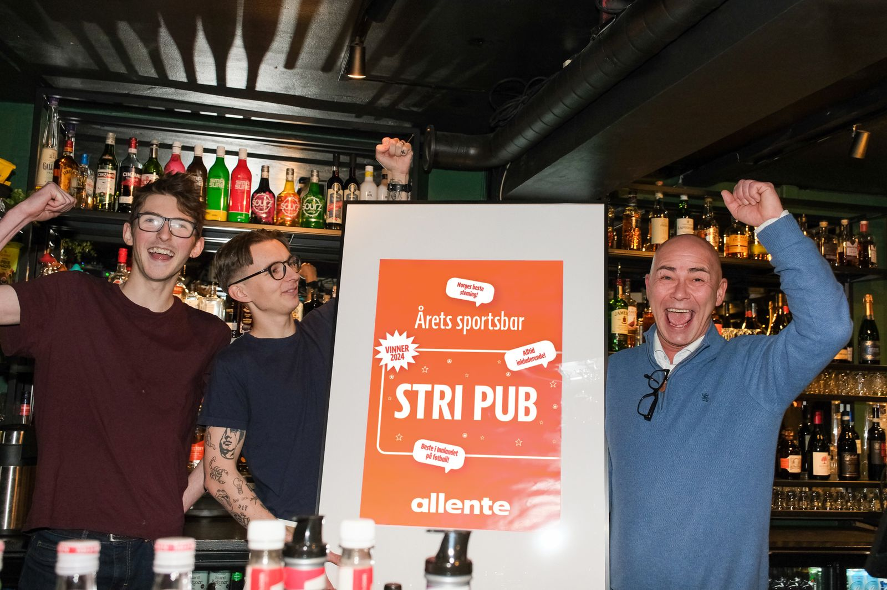

Allente – lokal PR-ressurs i det norske markedet
SALO har bistått Allente med PR-rådgivning, mediehåndtering, kommunikasjonsutforming og innholdsproduksjon i Norge.


For et nordisk selskap som Allente skal kommunikasjonen fungere på tvers av markeder, samtidig som nyheter, konsepter og budskap må tilpasses norsk medievirkelighet og norske målgrupper. SALO har vært en lokal kommunikasjonsressurs som kan kobles på både rådgivning og gjennomføring.
Arbeidet har omfattet strategisk sparring, utforming og tilpasning av kommunikasjon, pressearbeid, mediehåndtering og innholdsproduksjon.
Et konkret prosjekt var «Årets sportsbar», en kåring som løftet frem serveringsstedene og menneskene som gjør det mulig for supportere å følge Eliteserien sammen. SALO bistod med kommunikasjonen rundt den norske kåringen og med innhold da Stri Pub på Elverum ble kåret til vinner.
Allente fikk lokal PR- og kommunikasjonsstøtte tilpasset det norske markedet, og et nordisk konsept ble gitt en norsk ramme. Resultatet var en lang rekke oppslag i lokale og regionale medier, og økt engasjement rundt konkurransen.
Film fra kåringen av Stri Pub på Elverum. Filmen ligger hos Vimeo og lastes først når du trykker avspill.
Se tjenesten ↗
02 — SynlighetSe tjenesten ↗
04 — ProduksjonSe tjenesten ↗
Digital markedsplass
Case 06Handel, samfunn
Case 07Servering, forbruker
Trenger du et erfarent blikk på en kommunikasjonsutfordring, eller noen som kan få arbeidet ferdig?
Ta kontakt med oss, så finner vi tid for et effektivt arbeidsmøte.
post@salokommunikasjon.no